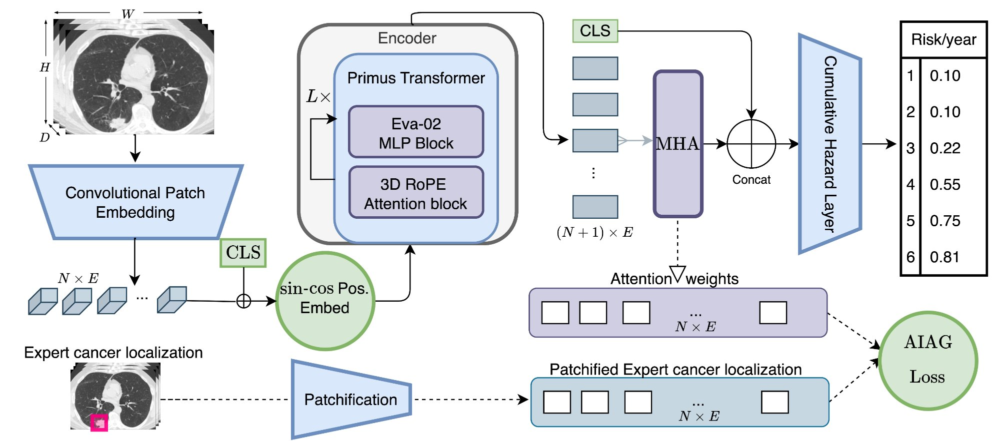

Abstract
Lung cancer risk estimation is gaining increasing importance as more countries introduce population-wide screening programs using low-dose CT (LDCT). As imaging volumes grow, scalable methods that can process entire lung volumes efficiently are essential. Existing approaches either over-rely on pixel-level annotations, limiting scalability, or analyze the lung in fragments, weakening performance. We present LungEvaty, a fully Transformer-based framework for predicting 1–6 year lung cancer risk from a single LDCT scan. The model operates on whole-lung inputs, learning directly from large-scale screening data to capture comprehensive anatomical and pathological cues relevant for malignancy risk. Using only imaging data and no region supervision, LungEvaty matches state-of-the-art performance, refinable by our optional Anatomically Informed Attention Guidance (AIAG) loss, which encourages anatomically focused attention. In total, LungEvaty was trained on more than 90,000 CT scans, including over 28,000 for fine-tuning and 6,000 for evaluation. Our framework offers a simple, data-efficient, and fully open-source solution that provides an extensible foundation for future research in longitudinal and multimodal lung cancer risk prediction.
Key Contributions
Whole-Lung Transformer
Fully Transformer-based architecture processing entire lung volumes — no fragmentation, full anatomical context.
AIAG Loss
Optional Anatomically Informed Attention Guidance — benefits from expert annotations when available, strong without them.
State-of-the-Art
Matches or exceeds SOTA with single modality, single task, and 60% of prior pretraining data volume.
Fully Open Source
Code and weights publicly available — enabling reproducible research and community-driven extensions.
Architecture

LungEvaty architecture. A Primus (EVA-02) Transformer encoder, pretrained via masked autoencoding on 91K NLST scans, processes the whole lung. A CLS token captures global context while a learnable MHA query token attends to local features. Both are concatenated and fed into a Cumulative Hazard Layer for 1–6 year risk prediction. The optional AIAG loss aligns attention weights with expert annotations when available.
Results
ROC-AUC (Years 1–6) and C-Index on the Sybil and M3FM test splits. Bold = best, underline = second best.
| Model | Training | Y1 | Y2 | Y3 | Y4 | Y5 | Y6 | C-Idx |
|---|---|---|---|---|---|---|---|---|
| Sybil Test Split | ||||||||
| Sybil | SM-ST | 0.927 | 0.844 | 0.792 | 0.769 | 0.755 | 0.750 | 0.749 |
| M3FM | MM-MT | 0.892 | 0.845 | 0.803 | 0.782 | 0.770 | 0.769 | 0.762 |
| LungEvaty (w/ AIAG) | SM-ST | 0.928 | 0.893 | 0.848 | 0.819 | 0.808 | 0.805 | 0.800 |
| LungEvaty (no annot.) | SM-ST | 0.923 | 0.887 | 0.844 | 0.820 | 0.809 | 0.809 | 0.802 |
| M3FM Test Split | ||||||||
| Sybil | SM-ST | 0.943 | 0.880 | 0.847 | 0.850 | 0.849 | 0.847 | 0.844 |
| M3FM Huge | MM-MT | 0.940 | 0.888 | 0.860 | 0.860 | 0.839 | 0.823 | – |
| LungEvaty (w/ AIAG) | SM-ST | 0.947 | 0.912 | 0.898 | 0.884 | 0.877 | 0.876 | 0.872 |
| LungEvaty (no annot.) | SM-ST | 0.939 | 0.901 | 0.891 | 0.883 | 0.878 | 0.878 | 0.873 |
PR-AUC on Sybil split — a more clinically relevant metric for imbalanced screening data.
| Model | Y1 | Y2 | Y3 | Y4 | Y5 | Y6 |
|---|---|---|---|---|---|---|
| Sybil | 0.357 | 0.285 | 0.251 | 0.235 | 0.244 | 0.292 |
| M3FM | 0.212 | 0.179 | 0.162 | 0.151 | 0.160 | 0.220 |
| LungEvaty | 0.444 | 0.364 | 0.323 | 0.297 | 0.299 | 0.361 |
Citation
@article{brandt2025lungevaty,
title={LungEvaty: A Scalable, Open-Source Transformer-Based
Deep Learning Model for Lung Cancer Risk Prediction
in LDCT Screening},
author={Brandt, Johannes and Chevli, Maulik and Braren, Rickmer
and Kaissis, Georgios and M{\"u}ller, Philip
and Rueckert, Daniel},
journal={arXiv preprint arXiv:2511.20116},
year={2025}
}